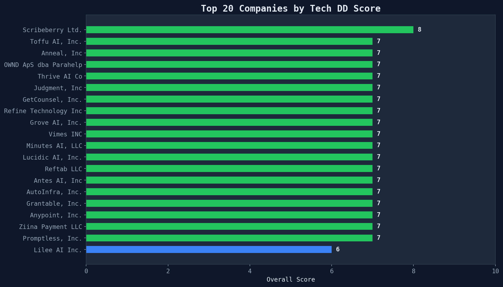
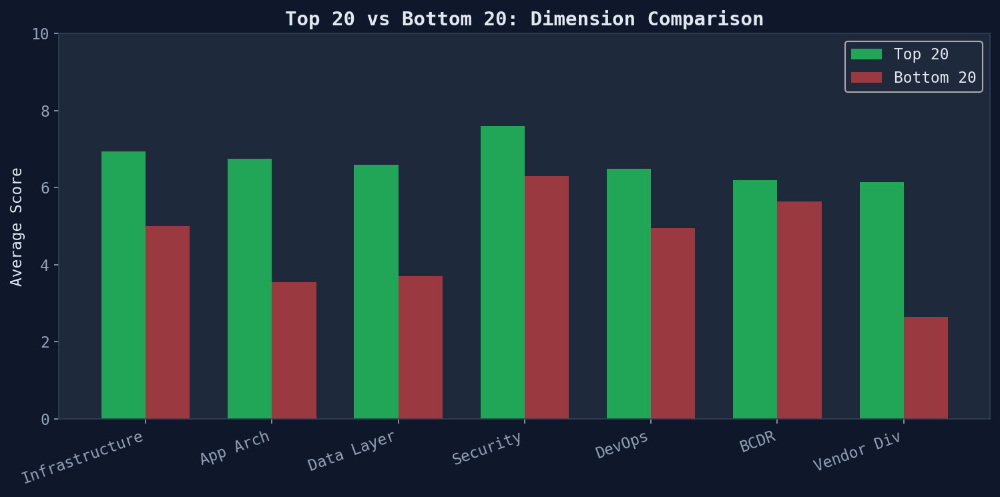
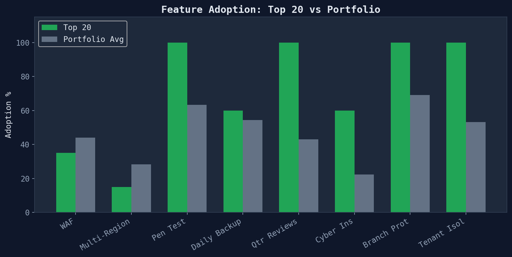

What the best companies do differently — profiling the top 20

| Company | Score | Cloud | Type | Vendors |
|---|---|---|---|---|
| Scribeberry Ltd. | 8 | GCP | SOC 2 Type | 3 |
| Toffu AI, Inc. | 7 | AWS | SOC 2 Type | 11 |
| Anneal, Inc | 7 | AWS | SOC 2 Type | 17 |
| OWND ApS dba Parahelp | 7 | AWS | SOC 2 Type | 3 |
| Thrive AI Co | 7 | GCP | SOC 2 Type | 5 |
| Judgment, Inc | 7 | AWS | SOC 2 Type | 2 |
| GetCounsel, Inc. | 7 | AWS | SOC 2 Type | 4 |
| Refine Technology Inc | 7 | GCP | SOC 2 Type | 5 |
| Grove AI, Inc. | 7 | GCP | SOC 2 Type | 1 |
| Vimes INC | 7 | AWS | SOC 2 Type | 4 |
| Minutes AI, LLC | 7 | GCP | SOC 2 Type | 1 |
| Lucidic AI, Inc. | 7 | AWS | SOC 2 Type | 7 |
| Reftab LLC | 7 | Other | SOC 2 Type | 7 |
| Antes AI, Inc | 7 | GCP | SOC 2 Type | 3 |
| AutoInfra, Inc. | 7 | AWS | SOC 2 Type | 8 |
| Grantable, Inc. | 7 | Supabase | SOC 2 Type | 5 |
| Anypoint, Inc. | 7 | GCP | SOC 2 Type | 11 |
| Ziina Payment LLC | 7 | AWS | SOC 2 Type | 8 |
| Promptless, Inc. | 7 | AWS | SOC 2 Type | 9 |
| Lilee AI Inc. | 6 | Supabase | SOC 2 Type | 5 |

Which features do top performers adopt more than the portfolio average?

Generated from top performers module · 485 SOC 2 compliance reports · 2026-03-24